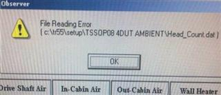

Service History
Subject: TR-60 Head_Count.dat error, up/down tray elevator speed and chamber thermo fuse
Handler Model: TR-60
Controller: RC520
Date: 28 Oct 2010
Symptom
At Renesas(former NEC-M) TR60 HMI B3.15-MNK, for TR60 after click the Observer, every time give File Reading error.

Is this software bug?
Why does it happen?
Any solution?
Ans:
In case of the error occurred, Head_Count.dat does not have in the software.
or Head_Count.dat has some damage.
Countermeasure:
- Copy normal operation of Head_Count.data file to the folder.
Is there any speed controller for the Auto3 tray elevator to reduce speed when moving the tray down?
If yes, where is the location of the speed controller?
Or is there software to adjust speed?
Ans:
Up/Down of tray elevator: It is impossible to adjust speed.
What is the rating(the specification eg 216DegC) for Thermo fuse in the soak/in buffer chamber of TR60?
If customer buy thermo fuse from EPSON, what is the complete package(eg thermo fuse + sleeving + metal crip)?
Ans:
Chamber fuse:
It depends on your requirement.
When you order us, please inform us which is better for you.
Note: Our engineer recommend that it is only fuse better than completed set.
(To easy replacement. However, you should be prepared special pliers.)
Regarding for Temperature fuse of Chamber, when you use R9E51216C (Temperature Fuse, R35T550001200, spec: R9E51216C) of temperature fuse, it is 216 degree of limitation.
Note: The parts is in maintenance manual Page 200 Chapter 11.
Action
Cause